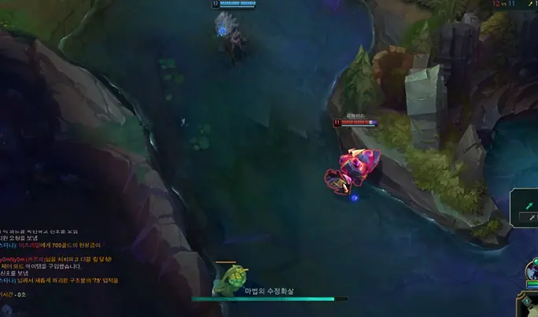

26 · 13 · 8 시간 전 · 원문

잔상을 쓰기 때문
수집 당시 댓글 13개
악덕팬더 · 16 시간 전
그건 제 잔상입니다만?
강알리 · 16 시간 전
MDLZ · 16 시간 전
머임
↳ 답글 · 일파라초 · 15 시간 전
니코 분신 세워 논거 아닐까 그게 제일 이치에 맞을듯?
↳ 답글 · MDLZ · 15 시간 전
아 니코구나
↳ 답글 · 개보지 · 9 시간 전
니코 분신이면 사라질때 이펙트있음
↳ 답글 · AMD리싸쑤 · 15 시간 전
↳ 답글 · 네녀석이나쁜거야 · 14 시간 전
아이젠 씹사기캐 맞다
illiil · 9 시간 전
느리구나
헬리오 · 9 시간 전
나 샤코아니다 스킨아님?
마자요 · 8 시간 전
mczoo · 8 시간 전
디리디리리리 · 6 시간 전
평범한 경화수월이네


그건 제 잔상입니다만?